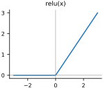
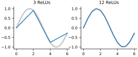

The classifier of the last chapter treats each pixel as an independent vote. Pixel 300 being bright adds a fixed amount to the score for 7, regardless of anything else in the image. That is why it cannot get much past 92 percent: whether a stroke means “seven” depends on the strokes around it, and a single weighted sum cannot express “this pixel matters only if that one is also on.”
The fix is to compute features of features. A first layer of weighted sums looks at the raw pixels and detects simple patterns; a second layer looks at those detections and combines them into decisions. Stack enough of these layers and you have a deep network. This chapter builds one, and finds that there is a catch: stacking layers does nothing at all unless we add one small, crucial ingredient between them.
Two layers that are really one
Let’s set things up as in Chapter 11: a seed, the device chosen as in Chapter 10, and a loader, which this time takes the dataset as an argument because we will use two of them. As before, the last 10,000 training images become the validation set and the test set waits until the end. Three helpers carry over unchanged and are not printed again: montage_plot from Chapter 8, and get_batch and accuracy from Chapter 11.
import torch
import torch.nn.functional as F
from torchvision.datasets import MNIST, FashionMNIST
torch.manual_seed(0)
def load(dataset, train):
ds = dataset('data', train=train, download=True)
X = ds.data.reshape(-1, 784).float() / 255.0
return X.to(device), ds.targets.to(device)
X, Y = load(MNIST, train=True)
X_test, Y_test = load(MNIST, train=False)
X_val, Y_val = X[50_000:], Y[50_000:] # validation split
X, Y = X[:50_000], Y[:50_000]
print(len(X), len(X_val), len(X_test))50000 10000 10000
Now the catch. Multiply the input by one matrix and then by another, and the result is the same as multiplying by the single matrix W1 @ W2:
x = torch.randn(5, 784)
W1 = 0.05 * torch.randn(784, 100)
W2 = 0.1 * torch.randn(100, 10)
two_layers = (x @ W1) @ W2
one_layer = x @ (W1 @ W2)
diff = (two_layers - one_layer).abs().max().item()
print(f'largest difference: {diff:.1g}')
print(torch.allclose(two_layers, one_layer, atol=1e-5))largest difference: 2e-06 True
The two answers differ by about two millionths, which is floating-point rounding: the computer rounds at every step, and the two orders of operation round differently. So we ask allclose whether they agree to within (atol, the absolute tolerance), and they do. However many matrices we chain together, the result is just one matrix in disguise, a linear classifier again. Depth buys nothing.
The bend
What breaks the collapse is a nonlinearity, a function applied to every number between the layers that is not a straight line. The simplest that works well, and the most widely used, is the rectified linear unit, or ReLU: leave positive numbers alone, replace negative numbers with zero.
def relu(x):
return x.clamp(min=0) # negatives become 0
z = torch.linspace(-3, 3, 7)
print(z)
print(relu(z))tensor([-3., -2., -1., 0., 1., 2., 3.]) tensor([0., 0., 0., 0., 1., 2., 3.])
z = torch.linspace(-3, 3, 100)
plt.figure(figsize=(2.4, 1.8))
plt.plot(z, relu(z))
plt.axhline(0, color='gray', linewidth=0.5)
plt.axvline(0, color='gray', linewidth=0.5)
plt.title('relu(x)')
plt.show()
It looks almost too simple to matter. But think of each hidden number as a detector. It computes a weighted sum of the pixels, and the ReLU makes it fire in proportion to how strongly its pattern is present, and stay silent otherwise. A silent detector contributes nothing to the next layer, so which detectors fire changes the computation the next layer performs. That input-dependent switching is exactly the “this matters only if that is present” logic that a single layer lacked. In fact a network with one hidden layer of ReLUs can approximate essentially any reasonable function, given enough hidden units. You can see why in one dimension. Each ReLU, relu(x - k), is a hinge: flat until , then a straight line. A weighted sum of hinges is a chain of straight segments, bending wherever one of them switches on, and with enough bends a chain of segments can follow any smooth curve:
def hinge_fit(f, n):
"""Copy f on [0, 6] with n ReLU hinges: a bend at each knot."""
knots = torch.linspace(0, 6, n + 1)
slopes = (f(knots[1:]) - f(knots[:-1])) / (knots[1:] - knots[:-1])
bends = torch.cat([slopes[:1], slopes[1:] - slopes[:-1]])
return lambda x: f(knots[0]) + sum(
b * relu(x - k) for b, k in zip(bends, knots[:-1]))
x = torch.linspace(0, 6, 300)
plt.figure(figsize=(4.6, 1.6))
for i, n in enumerate([3, 12]):
plt.subplot(1, 2, i + 1)
plt.plot(x, torch.sin(x), color='gray', lw=3, alpha=0.4)
plt.plot(x, hinge_fit(torch.sin, n)(x))
plt.title(f'{n} ReLUs')
plt.show()
Here we chose the hinges by hand, one bend at each of evenly spaced points, with the change of slope there as its weight. A hidden layer learns where to put its bends and how sharp to make them, in 784 dimensions instead of one.
Starting weights
Each layer needs a weight matrix and a bias vector, and before training they need starting values. How we choose the random starting weights matters more than you might expect. The experiment below pushes a batch of random inputs through ten layers of 256 units, each a random matrix followed by a ReLU, and prints how spread out the numbers are (their standard deviation) after every second layer. It tries three sizes of random weights: plain randn, the same scaled down to 0.01, and randn scaled by , where is the number of inputs to each layer.
x = torch.randn(1000, 256) # a batch of 1000 random inputs
for name, scale in [('randn', 1.0), ('small', 0.01),
('He', (2 / 256) ** 0.5)]:
h = x
spread = []
for layer_number in range(1, 11):
h = relu(h @ (scale * torch.randn(256, 256)))
if layer_number % 2 == 0: # print every other layer
spread.append(f'{h.std().item():8.2g}')
print(f'{name:6}', ' '.join(spread))randn 1.1e+02 1.4e+04 1.8e+06 2.3e+08 2.9e+10 small 0.011 0.00013 1.8e-06 2.3e-08 3.3e-10 He 0.85 0.93 1 1.1 1
With plain randn the numbers grow about tenfold at every layer; after ten layers they are in the tens of billions, and a deeper network would overflow. With weights of 0.01 they shrink about tenfold per layer instead, until the signal is less than a billionth of its starting size and the last layers see essentially nothing. The scale keeps the numbers near 1 however deep we go. This is the square-root law of Chapter 9 at work: a neuron adds up random products, so its output spreads out as times the size of one product, and dividing the weights by cancels that growth. The 2 makes up for the ReLU, which zeroes about half of its inputs. This is He initialization, after Kaiming He, who proposed it, and our layer function uses it:
def layer(n_in, n_out):
W = torch.randn(n_in, n_out, device=device) * (2 / n_in) ** 0.5
b = torch.zeros(n_out, device=device)
return [W.requires_grad_(), b.requires_grad_()]
w = layer(784, 500) + layer(500, 10)
print([tuple(p.shape) for p in w])[(784, 500), (500,), (500, 10), (10,)]
A network with a hidden layer
The network has 784 inputs, a hidden layer of 500 detectors, and 10 outputs:
def model(x, w):
x = relu(x @ w[0] + w[1]) # hidden layer
return x @ w[2] + w[3] # output layer: raw scores, no reluNote that there is no ReLU after the output layer. The ten outputs are scores for the cross-entropy loss, and a score must be allowed to be negative; clipping them at zero would throw away information about how strongly the network rejects each class.
From now on we will use PyTorch’s built-in F.cross_entropy (we checked in Chapter 11 that it matches ours) and wrap the training loop in a function, since we will be calling it several times. The function takes the data to check progress on as arguments, so we can hand it the validation set of whichever dataset we are using. evaluate does the checking inside torch.no_grad().
We also switch from SGD to Adam. With several layers, the gradients of different weight matrices can differ a lot in size, and a single learning rate that suits one layer may be too large or too small for another. Adam adapts each weight’s step size by itself, so it is much less fussy about the learning rate, and lr=0.001 is the usual starting point.
def evaluate(model, w, X, Y):
with torch.no_grad(): # no gradients needed to check
return round(accuracy(model(X, w), Y), 4)
def train(model, w, X, Y, X_val, Y_val,
steps=5000, lr=0.001, batch_size=128):
optimizer = torch.optim.Adam(w, lr=lr)
for step in range(steps + 1):
x, y = get_batch(X, Y, batch_size)
loss = F.cross_entropy(model(x, w), y)
optimizer.zero_grad()
loss.backward()
optimizer.step()
if step % 1000 == 0:
acc = evaluate(model, w, X_val, Y_val)
print(step, round(loss.item(), 3), acc)train(model, w, X, Y, X_val, Y_val)0 2.371 0.2977 1000 0.081 0.9714 2000 0.031 0.9765 3000 0.061 0.9784 4000 0.007 0.9806 5000 0.008 0.9807
From 92 percent to 98 on the validation set, with one hidden layer. That is a big jump: the error rate has fallen from about 7 percent to about 2, by roughly three quarters. The accuracy wobbles a little from one checkpoint to the next because each step uses a different random batch; the trend matters, not the last digit.
What the hidden layer sees
Each hidden unit has 784 incoming weights, one per pixel, so as before we can draw them as images (Figure 12.3).
first = w[0].T[:36].reshape(36, 28, 28).detach().cpu().numpy()
montage_plot(first, size=4.6, grid_shape=(4, 9), symmetric=True)These are not digit templates anymore. Much of each image is still the random noise it started as. Pixels near the border are blank in almost every digit, so their weights get no gradient and never change. But in the middle you can make out fragments: strokes and pieces of curves, often a dark stroke beside a light one. No single unit decides anything. Each detects some partial pattern, and the output layer learns which combinations of fragments mean which digit. This division of labor, simple detectors feeding more abstract ones, is the central idea of deep learning, and we will see it again, much more clearly, inside the networks of Part IV.
Any number of layers
Writing out every layer by hand gets tedious. Since w is a list of alternating weights and biases, a loop can apply any number of layers, using a ReLU after every layer except the last:
def model(x, w):
n_layers = len(w) // 2 # w holds W, b, W, b, ...
for i in range(n_layers):
W, b = w[2 * i], w[2 * i + 1]
x = x @ W + b
if i < n_layers - 1: # relu after all but the last
x = relu(x)
return xAnd a helper builds the weights for any list of layer sizes. Here are two hidden layers of 256 units each:
def network(sizes):
w = []
for n_in, n_out in zip(sizes[:-1], sizes[1:]):
w += layer(n_in, n_out)
return w
w = network([784, 256, 256, 10])
train(model, w, X, Y, X_val, Y_val)0 2.557 0.1697 1000 0.037 0.9718 2000 0.065 0.9761 3000 0.012 0.975 4000 0.002 0.9763 5000 0.001 0.9806
On MNIST this does about as well as the single wide hidden layer. MNIST is close to solved by now; a deeper network has little left to find.
Memorizing versus learning
Compare how the network does on the images it trained on with the validation images it has never trained on:
print('train ', evaluate(model, w, X, Y))
print('validation', evaluate(model, w, X_val, Y_val))train 0.9977 validation 0.9806
On the training images it is almost perfect. On the validation images it is about 1.7 points worse. This gap is overfitting: some of what the network learned is specific to the particular training images, quirks that do not carry over to new ones. A network with hundreds of thousands of weights has room to memorize a lot. A small gap like this one is normal and harmless. When the gap grows large, the usual remedies are more data, a smaller network, stopping training earlier, or showing the network altered copies of its training images, which we will do in Chapter 16.
We are done experimenting on MNIST, so it is time to look at the test set, once, with the deeper network:
print('test', evaluate(model, w, X_test, Y_test))test 0.9808
98.1 percent, the same as on the validation set. Our choices were not tuned to the validation images so closely that they failed to carry over.
A harder problem
MNIST is nearly solved, so let’s try the same networks on the clothing images of Fashion-MNIST from Chapter 8. We load it in place of MNIST, with the same split. Because network and model accept any list of sizes, [784, 10], with no hidden layer at all, gives us the linear classifier for comparison:
X, Y = load(FashionMNIST, train=True)
X_test, Y_test = load(FashionMNIST, train=False)
X_val, Y_val = X[50_000:], Y[50_000:]
X, Y = X[:50_000], Y[:50_000]
w_linear = network([784, 10]) # no hidden layer at all
train(model, w_linear, X, Y, X_val, Y_val)0 2.722 0.0993 1000 0.396 0.8321 2000 0.471 0.8465 3000 0.54 0.8535 4000 0.557 0.8495 5000 0.458 0.8531
The linear classifier levels off at about 85 percent on the validation set. Now the network with two hidden layers:
w_deep = network([784, 256, 256, 10])
train(model, w_deep, X, Y, X_val, Y_val)0 2.523 0.1923 1000 0.373 0.8625 2000 0.307 0.8808 3000 0.267 0.8884 4000 0.176 0.8889 5000 0.207 0.8899
It reaches 89 percent. Clothing is harder than digits for both models, and the hidden layers help less here: they gain about four points over the linear classifier, where on MNIST they gained more than five and removed three quarters of the errors. Flattened pixels can only take us so far on clothing. The deep network also overfits more on clothing:
print('train ', evaluate(model, w_deep, X, Y))
print('validation', evaluate(model, w_deep, X_val, Y_val))train 0.9307 validation 0.8899
The gap between training and validation accuracy is now about 4 points, against 1.7 on MNIST.
The same network, the PyTorch way
Our list of weights and our model loop work, and you now know exactly what is inside a network. PyTorch packages the same pieces as modules. nn.Linear(784, 256) is a layer: it creates and holds its own weight matrix and bias. nn.ReLU() is the bend. nn.Sequential chains modules together, feeding each one’s output to the next, which is what our loop in model did:
import torch.nn as nn
net = nn.Sequential(
nn.Linear(784, 256), nn.ReLU(),
nn.Linear(256, 256), nn.ReLU(),
nn.Linear(256, 10),
).to(device)
print(net)
print(sum(p.numel() for p in net.parameters()), # weights in net
sum(p.numel() for p in w_deep)) # and in w_deepSequential( (0): Linear(in_features=784, out_features=256, bias=True) (1): ReLU() (2): Linear(in_features=256, out_features=256, bias=True) (3): ReLU() (4): Linear(in_features=256, out_features=10, bias=True) ) 269322 269322
It has exactly as many weights as w_deep. (nn.Linear stores its matrix the other way round, 256 by 784, and computes x @ W.T + b, but that is only bookkeeping.) net.parameters() hands the optimizer every weight inside the network, and calling net(x) runs the whole stack. The training loop is the one inside our train function:
optimizer = torch.optim.Adam(net.parameters(), lr=0.001)
for step in range(5001):
x, y = get_batch(X, Y, 128)
loss = F.cross_entropy(net(x), y)
optimizer.zero_grad()
loss.backward()
optimizer.step()
net.eval() # switch to evaluation mode
with torch.no_grad():
print('validation', round(accuracy(net(X_val), Y_val), 4))
print('test ', round(accuracy(net(X_test), Y_test), 4))validation 0.8909 test 0.8829
net.eval() switches the network into evaluation mode. It changes nothing for this network, but some kinds of layers you will meet later behave differently during training and checking, so it is a good habit to switch before evaluating. The modular network reaches 89 percent on the validation set, the same as w_deep, even though nn.Linear starts from PyTorch’s own default initialization, which is about two and a half times smaller than He’s (it was designed with a different rule in mind). With Fashion-MNIST experiments finished, we look at its test set once: 88.3 percent. Starting with AlexNet in Chapter 15, our networks will be written this way.
Deep as it is, this network still has a basic handicap. Like the linear model, it starts by flattening the image into a list, so it has no idea which pixels are next to which. Shift a sneaker three pixels to the right and, as far as the network can tell, it is a completely different list of numbers. Images have structure that these networks ignore. The next part of the book is about networks that use it.